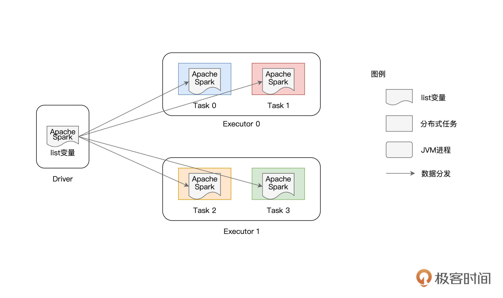
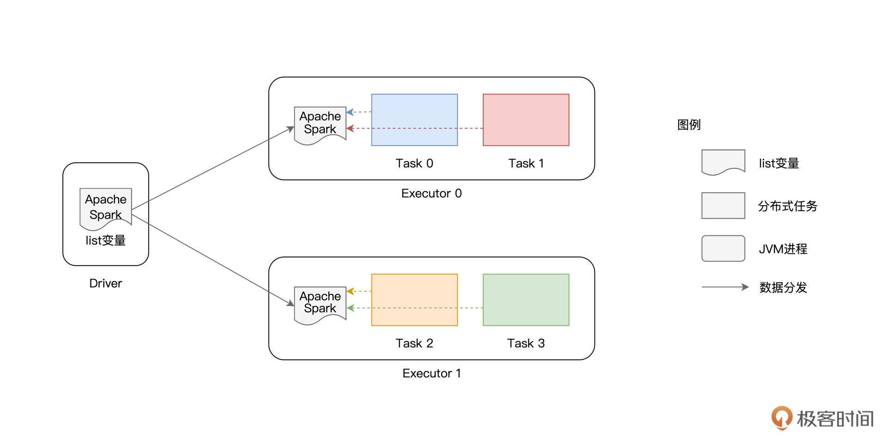

- 00 开篇词 入门Spark，你需要学会“三步走”.md
- 01 Spark：从“大数据的Hello World”开始.md
- 02 RDD与编程模型：延迟计算是怎么回事？.md
- 03 RDD常用算子（一）：RDD内部的数据转换.md
- 04 进程模型与分布式部署：分布式计算是怎么回事？.md
- 05 调度系统：如何把握分布式计算的精髓？.md
- 06 Shuffle管理：为什么Shuffle是性能瓶颈？.md
- 07 RDD常用算子（二）：Spark如何实现数据聚合？.md
- 08 内存管理：Spark如何使用内存？.md
- 09 RDD常用算子（三）：数据的准备、重分布与持久化.md
- 10 广播变量 & 累加器：共享变量是用来做什么的？.md
- 11 存储系统：数据到底都存哪儿了？.md
- 12 基础配置详解：哪些参数会影响应用程序稳定性？.md
- 13 Spark SQL：让我们从“小汽车摇号分析”开始.md
- 14 台前幕后：DataFrame与Spark SQL的由来.md
- 15 数据源与数据格式：DataFrame从何而来？.md
- 16 数据转换：如何在DataFrame之上做数据处理？.md
- 17 数据关联：不同的关联形式与实现机制该怎么选？.md
- 18 数据关联优化：都有哪些Join策略，开发者该如何取舍？.md
- 19 配置项详解：哪些参数会影响应用程序执行性能？.md
- 20 Hive + Spark强强联合：分布式数仓的不二之选.md
- 21 Spark UI（上）：如何高效地定位性能问题？.md
- 22 Spark UI（下）：如何高效地定位性能问题？.md
- 23 Spark MLlib：从“房价预测”开始.md
- 24 特征工程（上）：有哪些常用的特征处理函数？.md
- 25 特征工程（下）：有哪些常用的特征处理函数？.md
- 26 模型训练（上）：决策树系列算法详解.md
- 27 模型训练（中）：回归、分类和聚类算法详解.md
- 28 模型训练（下）：协同过滤与频繁项集算法详解.md
- 29 Spark MLlib Pipeline：高效开发机器学习应用.md
- 30 Structured Streaming：从“流动的Word Count”开始.md
- 31 新一代流处理框架：Batch mode和Continuous mode哪家强？.md
- 32 Window操作&Watermark：流处理引擎提供了哪些优秀机制？.md
- 33 流计算中的数据关联：流与流、流与批.md
- 34 Spark + Kafka：流计算中的“万金油”.md
- 用户故事 小王：保持空杯心态，不做井底之蛙.md
- 结束语 进入时间裂缝，持续学习.md
10 广播变量 & 累加器：共享变量是用来做什么的？
你好，我是吴磊。
今天是国庆第一天，首先祝你节日快乐。专栏上线以来，有不少同学留言说期待后续内容，所以国庆期间我们仍旧更新正文内容，让我们一起把基础知识模块收个尾。
学习过RDD常用算子之后，回顾这些算子，你会发现它们都是作用（Apply）在RDD之上的。RDD的计算以数据分区为粒度，依照算子的逻辑，Executors以相互独立的方式，完成不同数据分区的计算与转换。
不难发现，对于Executors来说，分区中的数据都是局部数据。换句话说，在同一时刻，隶属于某个Executor的数据分区，对于其他Executors来说是不可见的。
不过，在做应用开发的时候，总会有一些计算逻辑需要访问“全局变量”，比如说全局计数器，而这些全局变量在任意时刻对所有的Executors都是可见的、共享的。那么问题来了，像这样的全局变量，或者说共享变量，Spark又是如何支持的呢？
今天这一讲，我就来和你聊聊Spark共享变量。按照创建与使用方式的不同，Spark提供了两类共享变量，分别是广播变量（Broadcast variables）和累加器（Accumulators）。接下来，我们就正式进入今天的学习，去深入了解这两种共享变量的用法、以及它们各自的适用场景。
广播变量（Broadcast variables）
我们先来说说广播变量。广播变量的用法很简单，给定普通变量x，通过调用SparkContext下的broadcast API即可完成广播变量的创建，我们结合代码例子看一下。
val list: List[String] = List("Apache", "Spark")
// sc为SparkContext实例
val bc = sc.broadcast(list)
在上面的代码示例中，我们先是定义了一个字符串列表list，它包含“Apache”和“Spark”这两个单词。然后，我们使用broadcast函数来创建广播变量bc，bc封装的内容就是list列表。
// 读取广播变量内容
bc.value
// List[String] = List(Apache, Spark)
// 直接读取列表内容
list
// List[String] = List(Apache, Spark)
使用broadcast API创建广播变量
广播变量创建好之后，通过调用它的value函数，我们就可以访问它所封装的数据内容。可以看到调用bc.value的效果，这与直接访问字符串列表list的效果是完全一致的。
看到这里，你可能会问：“明明通过访问list变量就可以直接获取字符串列表，为什么还要绕个大弯儿，先去封装广播变量，然后又通过它的value函数来获取同样的数据内容呢？”实际上，这是个非常好的问题，要回答这个问题，咱们需要做个推演，看看直接访问list变量会产生哪些弊端。
在前面的几讲中，我们换着花样地变更Word Count的计算逻辑。尽管Word Count都快被我们“玩坏了”，不过，一以贯之地沿用同一个实例，有助于我们通过对比迅速掌握新的知识点、技能点。因此，为了让你迅速掌握广播变量的“精髓”，咱们不妨“故技重施”，继续在Word Count这个实例上做文章。
普通变量的痛点
这一次，为了对比使用广播变量前后的差异，我们把Word Count变更为“定向计数”。
所谓定向计数，它指的是只对某些单词进行计数，例如，给定单词列表list，我们只对文件wikiOfSpark.txt当中的“Apache”和“Spark”这两个单词做计数，其他单词我们可以忽略。结合[第1讲]Word Count的完整代码，这样的计算逻辑很容易实现，如下表所示。
import org.apache.spark.rdd.RDD
val rootPath: String = _
val file: String = s"${rootPath}/wikiOfSpark.txt"
// 读取文件内容
val lineRDD: RDD[String] = spark.sparkContext.textFile(file)
// 以行为单位做分词
val wordRDD: RDD[String] = lineRDD.flatMap(line => line.split(" "))
// 创建单词列表list
val list: List[String] = List("Apache", "Spark")
// 使用list列表对RDD进行过滤
val cleanWordRDD: RDD[String] = wordRDD.filter(word => list.contains(word))
// 把RDD元素转换为（Key，Value）的形式
val kvRDD: RDD[(String, Int)] = cleanWordRDD.map(word => (word, 1))
// 按照单词做分组计数
val wordCounts: RDD[(String, Int)] = kvRDD.reduceByKey((x, y) => x + y)
// 获取计算结果
wordCounts.collect
// Array[(String, Int)] = Array((Apache,34), (Spark,63))
将上述代码丢进spark-shell，我们很快就能算出，在wikiOfSpark.txt文件中，“Apache”这个单词出现了34次，而“Spark”则出现了63次。虽说得出计算结果挺容易的，不过知其然，还要知其所以然，接下来，咱们一起来分析一下，这段代码在运行时是如何工作的。

如上图所示，list变量本身是在Driver端创建的，它并不是分布式数据集（如lineRDD、wordRDD）的一部分。因此，在分布式计算的过程中，Spark需要把list变量分发给每一个分布式任务（Task），从而对不同数据分区的内容进行过滤。
在这种工作机制下，如果RDD并行度较高、或是变量的尺寸较大，那么重复的内容分发就会引入大量的网络开销与存储开销，而这些开销会大幅削弱作业的执行性能。为什么这么说呢？
要知道，Driver端变量的分发是以Task为粒度的，系统中有多少个Task，变量就需要在网络中分发多少次。更要命的是，每个Task接收到变量之后，都需要把它暂存到内存，以备后续过滤之用。换句话说，在同一个Executor内部，多个不同的Task多次重复地缓存了同样的内容拷贝，毫无疑问，这对宝贵的内存资源是一种巨大的浪费。
RDD并行度较高，意味着RDD的数据分区数量较多，而Task数量与分区数相一致，这就代表系统中有大量的分布式任务需要执行。如果变量本身尺寸较大，大量分布式任务引入的网络开销与内存开销会进一步升级。在工业级应用中，RDD的并行度往往在千、万这个量级，在这种情况下，诸如list这样的变量会在网络中分发成千上万次，作业整体的执行效率自然会很差 。
面对这样的窘境，我们有没有什么办法，能够避免同一个变量的重复分发与存储呢？答案当然是肯定的，这个时候，我们就可以祭出广播变量这个“杀手锏”。
广播变量的优势
想要知道广播变量到底有啥优势，我们可以先用广播变量重写一下前面的代码实现，然后再做个对比，很容易就能发现广播变量为什么能解决普通变量的痛点。
import org.apache.spark.rdd.RDD
val rootPath: String = _
val file: String = s"${rootPath}/wikiOfSpark.txt"
// 读取文件内容
val lineRDD: RDD[String] = spark.sparkContext.textFile(file)
// 以行为单位做分词
val wordRDD: RDD[String] = lineRDD.flatMap(line => line.split(" "))
// 创建单词列表list
val list: List[String] = List("Apache", "Spark")
// 创建广播变量bc
val bc = sc.broadcast(list)
// 使用bc.value对RDD进行过滤
val cleanWordRDD: RDD[String] = wordRDD.filter(word => bc.value.contains(word))
// 把RDD元素转换为（Key，Value）的形式
val kvRDD: RDD[(String, Int)] = cleanWordRDD.map(word => (word, 1))
// 按照单词做分组计数
val wordCounts: RDD[(String, Int)] = kvRDD.reduceByKey((x, y) => x + y)
// 获取计算结果
wordCounts.collect
// Array[(String, Int)] = Array((Apache,34), (Spark,63))
可以看到，代码的修改非常简单，我们先是使用broadcast函数来封装list变量，然后在RDD过滤的时候调用bc.value来访问list变量内容。你可不要小看这个改写，尽管代码的改动微乎其微，几乎可以忽略不计，但在运行时，整个计算过程却发生了翻天覆地的变化。

在使用广播变量之前，list变量的分发是以Task为粒度的，而在使用广播变量之后，变量分发的粒度变成了以Executors为单位，同一个Executor内多个不同的Tasks只需访问同一份数据拷贝即可。换句话说，变量在网络中分发与存储的次数，从RDD的分区数量，锐减到了集群中Executors的个数。
要知道，在工业级系统中，Executors个数与RDD并行度相比，二者之间通常会相差至少两个数量级。在这样的量级下，广播变量节省的网络与内存开销会变得非常可观，省去了这些开销，对作业的执行性能自然大有裨益。
好啦，到现在为止，我们讲解了广播变量的用法、工作原理，以及它的优势所在。在日常的开发工作中，当你遇到需要多个Task共享同一个大型变量（如列表、数组、映射等数据结构）的时候，就可以考虑使用广播变量来优化你的Spark作业。接下来，我们继续来说说Spark支持的第二种共享变量：累加器。
累加器（Accumulators）
累加器，顾名思义，它的主要作用是全局计数（Global counter）。与单机系统不同，在分布式系统中，我们不能依赖简单的普通变量来完成全局计数，而是必须依赖像累加器这种特殊的数据结构才能达到目的。
与广播变量类似，累加器也是在Driver端定义的，但它的更新是通过在RDD算子中调用add函数完成的。在应用执行完毕之后，开发者在Driver端调用累加器的value函数，就能获取全局计数结果。按照惯例，咱们还是通过代码来熟悉累加器的用法。
聪明的你可能已经猜到了，我们又要对Word Count“动手脚”了。在第1讲的Word Count中，我们过滤掉了空字符串，然后对文件wikiOfSpark.txt中所有的单词做统计计数。
不过这一次，我们在过滤掉空字符的同时，还想知道文件中到底有多少个空字符串，这样我们对文件中的“脏数据”就能做到心中有数了。
注意，这里对于空字符串的计数，不是主代码逻辑，它的计算结果不会写入到Word Count最终的统计结果。所以，只是简单地去掉filter环节，是无法实现空字符计数的。
那么，你自然会问：“不把filter环节去掉，怎么对空字符串做统计呢？”别着急，这样的计算需求，正是累加器可以施展拳脚的地方。你可以先扫一眼下表的代码实现，然后我们再一起来熟悉累加器的用法。
import org.apache.spark.rdd.RDD
val rootPath: String = _
val file: String = s"${rootPath}/wikiOfSpark.txt"
// 读取文件内容
val lineRDD: RDD[String] = spark.sparkContext.textFile(file)
// 以行为单位做分词
val wordRDD: RDD[String] = lineRDD.flatMap(line => line.split(" "))
// 定义Long类型的累加器
val ac = sc.longAccumulator("Empty string")
// 定义filter算子的判定函数f，注意，f的返回类型必须是Boolean
def f(x: String): Boolean = {
if(x.equals("")) {
// 当遇到空字符串时，累加器加1
ac.add(1)
return false
} else {
return true
}
}
// 使用f对RDD进行过滤
val cleanWordRDD: RDD[String] = wordRDD.filter(f)
// 把RDD元素转换为（Key，Value）的形式
val kvRDD: RDD[(String, Int)] = cleanWordRDD.map(word => (word, 1))
// 按照单词做分组计数
val wordCounts: RDD[(String, Int)] = kvRDD.reduceByKey((x, y) => x + y)
// 收集计数结果
wordCounts.collect
// 作业执行完毕，通过调用value获取累加器结果
ac.value
// Long = 79
与第1讲的Word Count相比，这里的代码主要有4处改动：
- 使用SparkContext下的longAccumulator来定义Long类型的累加器；
- 定义filter算子的判定函数f，当遇到空字符串时，调用add函数为累加器计数；
- 以函数f为参数，调用filter算子对RDD进行过滤；
- 作业完成后，调用累加器的value函数，获取全局计数结果。
你不妨把上面的代码敲入到spark-shell里，直观体验下累加器的用法与效果，ac.value给出的结果是79，这说明以空格作为分隔符切割源文件wikiOfSpark.txt之后，就会留下79个空字符串。
另外，你还可以验证wordCounts这个RDD，它包含所有单词的计数结果，不过，你会发现它的元素并不包含空字符串，这与我们预期的计算逻辑是一致的。
除了上面代码中用到的longAccumulator，SparkContext还提供了doubleAccumulator和collectionAccumulator这两种不同类型的累加器，用于满足不同场景下的计算需要，感兴趣的话你不妨自己动手亲自尝试一下。
其中，doubleAccumulator用于对Double类型的数值做全局计数；而collectionAccumulator允许开发者定义集合类型的累加器，相比数值类型，集合类型可以为业务逻辑的实现，提供更多的灵活性和更大的自由度。
不过，就这3种累加器来说，尽管类型不同，但它们的用法是完全一致的。都是先定义累加器变量，然后在RDD算子中调用add函数，从而更新累加器状态，最后通过调用value函数来获取累加器的最终结果。
好啦，到这里，关于累加器的用法，我们就讲完了。在日常的开发中，当你遇到需要做全局计数的场景时，别忘了用上累加器这个实用工具。
重点回顾
今天的内容讲完了，我们一起来做个总结。今天这一讲，我们重点讲解了广播变量与累加器的用法与适用场景。
广播变量由Driver端定义并初始化，各个Executors以只读（Read only）的方式访问广播变量携带的数据内容。累加器也是由Driver定义的，但Driver并不会向累加器中写入任何数据内容，累加器的内容更新，完全是由各个Executors以只写（Write only）的方式来完成，而Driver仅以只读的方式对更新后的内容进行访问。
关于广播变量，你首先需要掌握它的基本用法。给定任意类型的普通变量，你都可以使用SparkContext下面的broadcast API来创建广播变量。接下来，在RDD的转换与计算过程中，你可以通过调用广播变量的value函数，来访问封装的数据内容，从而辅助RDD的数据处理。
需要额外注意的是，在Driver与Executors之间，普通变量的分发与存储，是以Task为粒度的，因此，它所引入的网络与内存开销，会成为作业执行性能的一大隐患。在使用广播变量的情况下，数据内容的分发粒度变为以Executors为单位。相比前者，广播变量的优势高下立判，它可以大幅度消除前者引入的网络与内存开销，进而在整体上提升作业的执行效率。
关于累加器，首先你要清楚它的适用场景，当你需要做全局计数的时候，累加器会是个很好的帮手。其次，你需要掌握累加器的具体用法，可以分为这样3步：
- 使用SparkContext下的[long | double | collection]Accumulator来定义累加器；
- 在RDD的转换过程中，调用add函数更新累加器状态；
- 在作业完成后，调用value函数，获取累加器的全局结果。
每课一练
- 在使用累加器对空字符串做全局计数的代码中，请你用普通变量去替换累加器，试一试，在不使用累加器的情况，能否得到预期的计算结果？
- 累加器提供了Long、Double和Collection三种类型的支持，那么广播变量在类型支持上有限制吗？除了普通类型、集合类型之外，广播变量还支持其他类型吗？比如，Spark支持在RDD之上创建广播变量吗？
欢迎你在留言区跟我交流互动，也推荐你把这一讲的内容分享给你身边的朋友，说不定就能帮他解决一个难题。
© 2019 - 2023 Liangliang Lee. Powered by gin and hexo-theme-book.